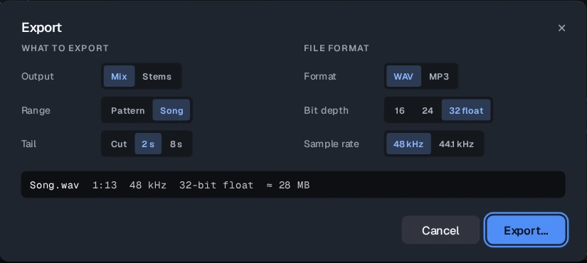

Render a WAV or MP3
- Open File → Export audio… and set Output to Mix.
- Under Range, choose Song for the full Playlist, Pattern for the current pattern, or Loop for a range drawn on the Playlist ruler.
- Under Format, choose WAV for uncompressed audio or MP3 for a smaller listening copy. Choose Export… and save the file.
Use Tail to let reverb and delay fade. For a WAV loop, Wrap folds the tail into the start.


Empty Playlist? Choose Pattern or add clips before exporting Song.
Export mixer stems
- Set Output to Stems and select a range.
- Set Master to Include if you also want a full mix. Choose Pick folder….
Stems are equal-length files from active, audible inserts. Only the Master mix includes Master effects.
Share an editable project
Choose File → Export project as ZIP… to collect the project, samples, and recorded takes. The recipient should extract the whole ZIP and keep the Audio folder beside the .synkopa file.
Send any third-party plugin requirements and files loaded inside those plugins separately. Include a mix or stems for playback without the plugins.